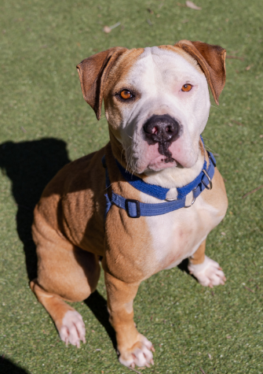
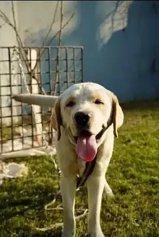

Adopt a Dog at PawMatch
Discover Your New Best Friend
Our adoption centers are open daily from 12 PM to 7 PM. To ensure ample time to interact with adoptable dogs, please arrive before 6:30 PM.
In-Person Adoptions
Visit our centers to explore our selection of lovable dogs. Bring a leash to take your new furry friend home the same day. Our friendly staff is ready to assist you in finding the perfect match.
Virtual Adptions
For animals in foster homes, schedule a virtual meet and greet. Connect with foster parents directly to learn more and set up a meeting. Experience the convenience of adopting from the comfort of your home.
Our Adoption Process
Browse our online database to view available dogs. Schedule a visit to meet your potential
companion. Complete the adoption process and take your new furry friend home.
Learn more about the adoption process please visit, How
to Adopt
Adopt Your Furry Companion Today

Duke
2 years old
Hi, I'm Duke! I'm a strong, protective and loyal Rottweiler who
loves to be around......
Oliver
4 months old
Hi, I'm Oliver! I'm a adorable and playful 4-month-old Poodle
puppy. I'm still ......

Lily
3 years old
Hi, I'm Lily! I'm a sweet and affectionate Staffordshire Terrier
who loves to......
Oskar
5 years old
Hi, I'm Oskar! who loves to be around people. I'm very
loyal.....
Daisy
2 Months old
Hi, I'm Daisy! I'm an energetic and intelligent Dalmatian who
loves to run and.....

Jack
1.5 years old
Hi, I'm Jack! I'm a playful and intelligent Labrador Retriever
who loves to......
Ben
2 years old
Hi, I'm Ben! I'm a playful and energetic Germen Shepherd who
loves to.....
Toby
3 Months old
Hi, I'm Toby! I'm a playful and energetic puppy who loves
to.....
Luna
1 year old
Hi, I'm Luna! I'm a curious and playful Pitbull who loves
to......
Duke
2 years old
Hi, I'm Duke! I'm a strong, protective and loyal Rottweiler who loves to be around......
Oliver
4 months old
Hi, I'm Oliver! I'm a adorable and playful 4-month-old Poodle puppy. I'm still ......
Lily
3 years old
Hi, I'm Lily! I'm a sweet and affectionate Staffordshire Terrier who loves to......
Oskar
5 years old
Hi, I'm Oskar! who loves to be around people. I'm very loyal.....
Daisy
2 Months old
Hi, I'm Daisy! I'm an energetic and intelligent Dalmatian who loves to run and.....
Jack
1.5 years old
Hi, I'm Jack! I'm a playful and intelligent Labrador Retriever who loves to......
Ben
2 years old
Hi, I'm Ben! I'm a playful and energetic Germen Shepherd who loves to.....
Toby
3 Months old
Hi, I'm Toby! I'm a playful and energetic puppy who loves to.....
Luna
1 year old
Hi, I'm Luna! I'm a curious and playful Pitbull who loves to......